Игровые новости
Overwatch выходит на новый уровень. Нового персонажа очень оценили геймеры.
Он может пару уникальных способностей.
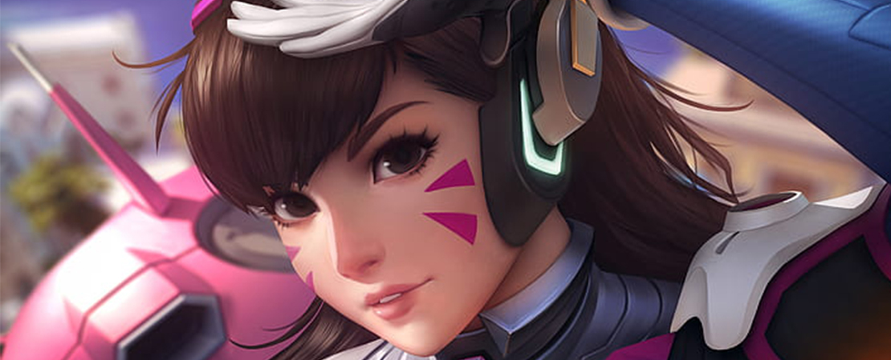
Вы гордились невероятными лучшими моментами, доставляли
груз за грузом, вышвыривали врагов за пределы полей боя и
очаровывали товарищей по команде танцами — чего только не
было в Overwatch за эти потрясающие четыре года! Команда
разработчиков тоже вложила немало сил и эмоций в нашу общую
мечту о светлом будущем, в котором героями могут быть все:
солдаты, искатели приключений, ученые и просто чудаки.
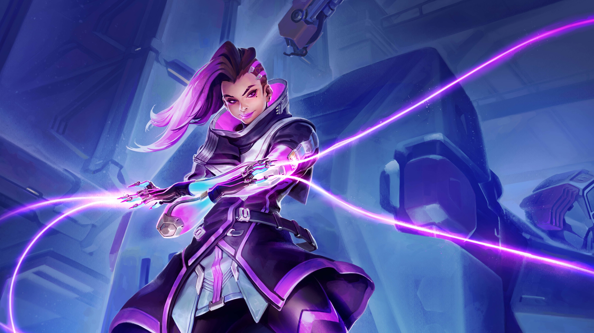
«Сначала мы просто подбирали ключевые слова и фразы,
которые служили бы для меня ориентиром, — пояснил Джефф,
рассказывая, как начиналась работа над озвучиванием Эхо. —
Мне сказали, что она должна ассоциироваться с истребителем;
она — адаптивный робот, образец новейших технологий в
мире Overwatch. Рассматривая ее модель, я не заметил обилия сервоприводов».
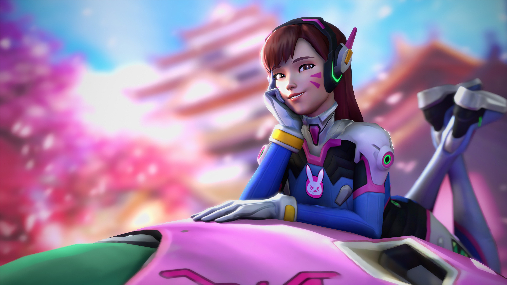
Когда команды поняли, какой Эхо должна быть в короткометражке,
нужно было решить следующую задачу: разобраться, как этот неуловимый
образ превратить в звуковые эффекты в игре. Как создать «парящие шаги»,
по которым можно понять о приближении Эхо? Как реплика суперспособности
Бастиона будет звучать в речи другого робота? Ответить на эти вопросы было
непросто, но Гарнетт не собирался отступать.
- В Steam вышли сразу две визуальные новеллы с анимешными тянками и боевыми
- Стало известно, когда на ПК выйдет шутер с анимешными тянками и боевыми
- Оборотень сражается с гигантским роботом в новом трейлере игры во вселенной Vampire The Masquerade
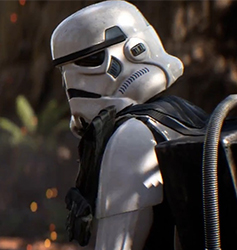
Swar Ward Battelfront: 2 раскрили новый тип штурмовиков
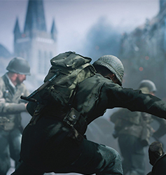
В Call of Dute 3 теперь доступен режым напарники
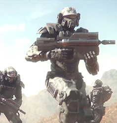
Новый мультфильм от вселенной "Звездный Дисан" выйдет уже в..
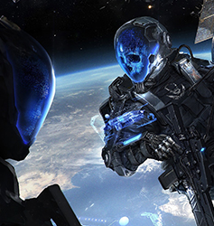
Комик Кон представил новую игру о фантастическом мире
Комментарии 21
Хейтер
21 lvl
2 дня назад
Робот проводил радиометрические и геофизические
работы на территории так называемого Рыжего леса,
а также в местах захоронения радиоактивных отходов.
Какой «умный» пёсик и оператор с пультом управления.
Молодцы. Фонит как от 4-го энергоблока после всех этих
замеров, ну и пусть, и к людям затем подвели вплотную, умницы.
Только вот «пузыря» на -4 радиации наверняка ни у кого нет, так что press F.
Ответить
Филин (гость)
Хейтер
1 день назад
Территория самого энергоблока (кроме, ясное дело,
внутренностей саркофага) в достаточной степени очищена.
Насчёт окрестностей — тут, конечно, можно позадавать вопросы,
но если эту псевдособачку дезактивировали, то никому ничего не будет.
Ответить
artemiy.frolov
43 lvl
Хейтер
4 дня назад
Тьфу ты.... я цж подумал они в сталкер модельку этого робота пса добавили с помощью модов
Ответить
Кеклик Алексеевич
40 lvl
5 дней назад
«S.T.A.L.K.E.R. выходит на новый уровень.»
Причём здесь S.T.A.L.K.E.R. известно только автору.
Ответить
Araiguma
6 lvl
7 дней назад
Если он бы просто сделал замеры, дистанционно
передал по сети и отключился или пусть даже самоуничтожился
— было бы нормально. Но он же сам теперь источник неплохой радиации,
а его потом 100% потащат обратно в университет, а через пару
подобных вылазок сделают новую модель, а эту снесут в музей
как «полезный опытный образец» и будет фонить там.
Ответить
Энакин Скайуокер
28 lvl
3 дня назад
Новый мутант в Зоне появился, я смотрю...
Ответить
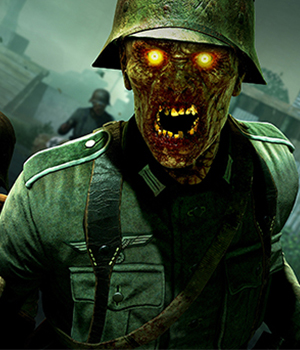
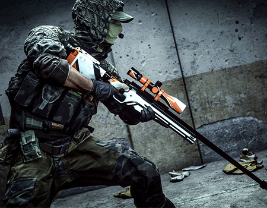
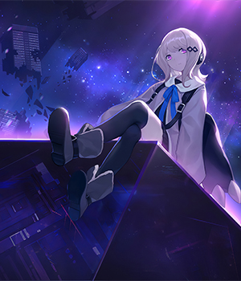
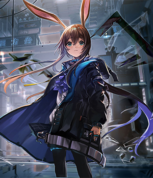
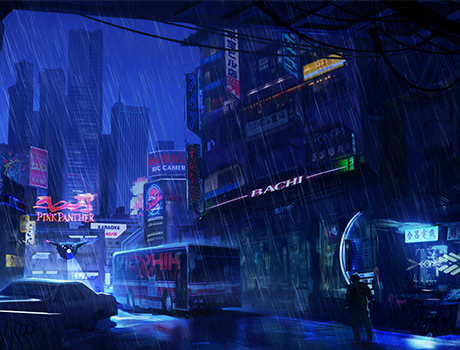
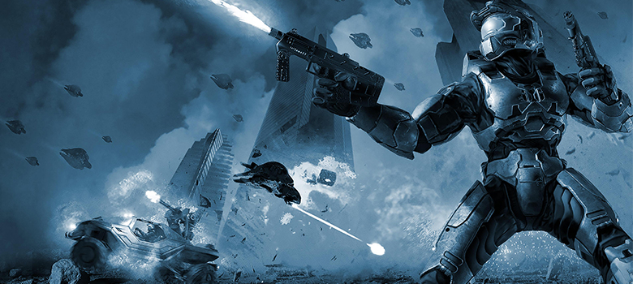
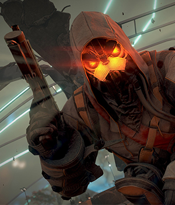
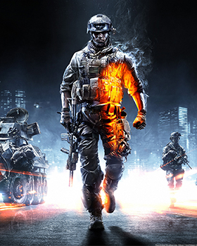
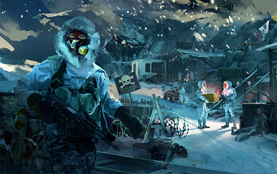
НОВОСТИ
Новая игра о зомби апокалипсисе вышла на платформу Xbox one а также
PlayStation 3
НОВОСТИ
В легендарной игре CS-GO обновили скин на AWP азимов.
Теперь скин будет с неоновым свечением.
НОВОСТИ
Hellowen 2020 или как не стать жертвой призраков ?
Нашы специалисты раскажут в этой стате.
НОВОСТИ
Новое аниме Луиза Нолуиза начнет выходить уже
этой осеню 8 декабря. Фанаты уже безума от него.
НОВОСТИ
"Быть или не быть ?" Спрашивает себя персонаж
нового аниме от знаменитого автора Хаджимото
НОВОСТИ
Cyberpank 2077 будут переносить дату релиза до 2077 года для
больше погружения в игру - заявил директор рекламного отдела.
НОВОСТИ
Halo 4 теперь на Xbox 3 с бесплатными дополнениями и кучей плюшек
для игроков. Студия уже обявила что не союбираеться на этому
останавливаться и хочет выпустить Hallowen обновления в этом месяце.
НОВОСТИ
В Тоун Роуз завезли хелоуинское обновления. Добавлены новые зомби враги.
НОВОСТИ
В Steam вышла новая версия Battelfield. Также теперь она и в Origin,
Xbox one и Play Station 4
НОВОСТИ
iCold - новая преключенчиская игра на PC. Стратегия подразумивает
под своим гемплеем многожество уровней и данжей невидимой красоты.
Теперь в Steam и Origin.
Гоу Еще